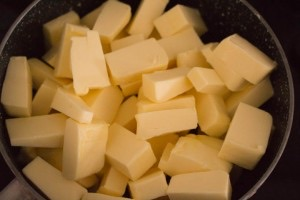
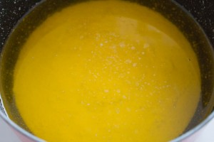
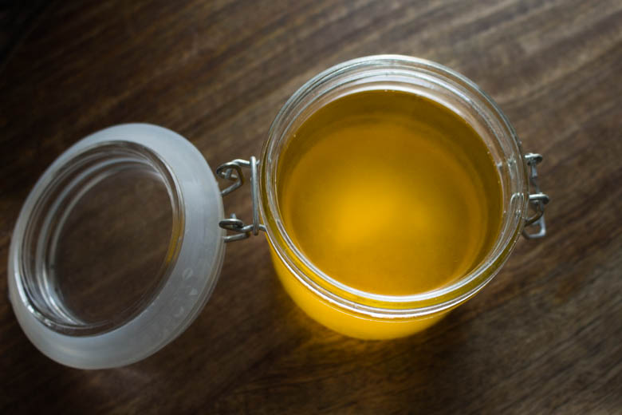

Comment faire son ghee et à quoi ça sert?

Dans cet article je vous parle du beurre « clarifié », ghee, smen, ghî etc…
Je pense que beaucoup d’entre vous connaissent déjà le beurre clarifié mais d’autres non… C’est donc parti pour quelques explications!
La clarification du beurre est utilisée depuis un grand nombre d’année notamment au Moyen-Orient mais aussi dans le Sud de l’Asie et plus particulièrement en Inde où il est très présent.
La technique de clarification du beurre consiste à éliminer les impuretés du beurre brut en enlevant le petit lait et les protéines qu’il contient (principalement la caséine: protéine de lait).
Mais à quoi ça sert de faire du ghee?
Question évidente me direz vous en effet il est bien plus simple d’aller directement au supermarché, d’acheter sa plaquette de beurre et de ne pas s’embêter^^
C’est parti pour « quelques » avantages du beurre clarifié :
Autre particularité que je ne qualifierai pas forcement d’avantage (mais presque !) est le fait que son goût est différent du beurre brut. Effectivement il a un petit goût de noisette très appréciable!
Je vous laisse découvrir comment faire son propre ghee!
J’espère que cette article vous aura été quelque peu utile! N’hésitez pas à me donner vos impressions 🙂
Ingrédients
- Beurre doux - 500g minimum
Instructions
- Couper les morceaux de beurre en morceaux grossiers et les mettre dans une casserole
- A feu très doux faire fondre le beurre
- Une fois que le beurre est fondu vous devez observer: - au fond de la casserole, l'apparition d'une couche blanchâtre (appelée le petit lait) qui s'est déposée; - sur le dessus, les impuretés du beurre sous la forme d'une mousse (selon la qualité de votre beurre il est possible qu'il n'y est pas de mousse (comme moi) sur le dessus mais juste des petits dépôts alors no stress!) Entre ces deux couches se trouve le ghee que nous recherchons !
- Si vous avez de la mousse sur le dessus enlever là totalement à l'aide d'une cuillère
- Filtrer le mélange restant avec un tamis, de l'étamine ou un chinois avec des mailles assez resserrées pour ne pas laisser le petit lait se mélanger au beurre clarifié



Les tips de la communauté
Article éducatif bien accueilli pour ses explications claires sur le ghee. Les lecteurs apprécient les nombreux conseils et astuces de préparation. Plusieurs ont eu du succès en ajustant les quantités de beurre et le mode de préparation.
Astuces
- Utiliser minimum 800g ou 1kg de beurre pour obtenir un résultat satisfaisant
- Utiliser du beurre non salé pour éviter que les cristaux de sel se collent au fond
- Verser le beurre dans un saladier évasé et laisser refroidir avant de retirer les impuretés
- Alternative au four micro-ondes à petite puissance pour une préparation plus rapide
- Conserver au frais, se conserve très bien pendant longtemps
Variantes suggérées
- Méthode alternative avec saladier au réfrigérateur (4h) et récupération du beurre clarifié par le dessus
- Préparation au four micro-ondes à petite puissance
Ajustements signalés
- Avec 250g de beurre seulement, le résultat n'est pas satisfaisant - minimum 1kg nécessaire
- La quantité de mousse formée dépend de la qualité du beurre utilisé